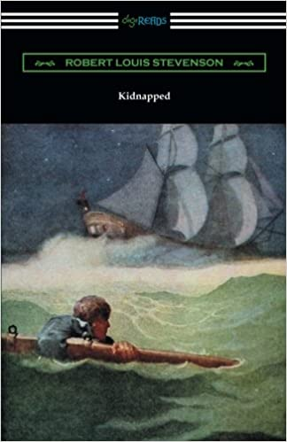

7.Kidnapped (Illustrated by N. C. Wyeth)

Set amidst the real world events which occurred following the Jacobite rising of 1745, Robert Louis Stevenson’s 1886 novel “Kidnapped” is
the story of David Balfour, who travels to meet his uncle and collect his inheritance following the death of his father. Betrayed by his Uncle,
David finds himself kidnapped by Captain Hoseason of the brig “Covenant”, who plans to sell him into slavery in the Carolina Colonies of America.
However the ship is blown of course and driven back towards Scotland where in the fog it strikes a small vessel and brings aboard the Scottish
soldier and Jacobite Alan Breck Stewart. With the help of Alan, David is able to escape his captors and soon finds himself in the middle of the
struggle between the Scottish Highlanders and soldiers of the English government. Stranded in the Scottish wilderness David must fight for his life
and return home to collect his rightful inheritance. Through the characters of Alan and David the conflict over Scottish independence from English
rule is adventurously depicted. This edition is printed on premium acid-free paper and includes illustrations by N. C. Wyeth.
{kind=link}
{kind=link}
{kind=link}
{kind=link}
{kind=link}
{kind=link}